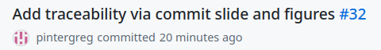
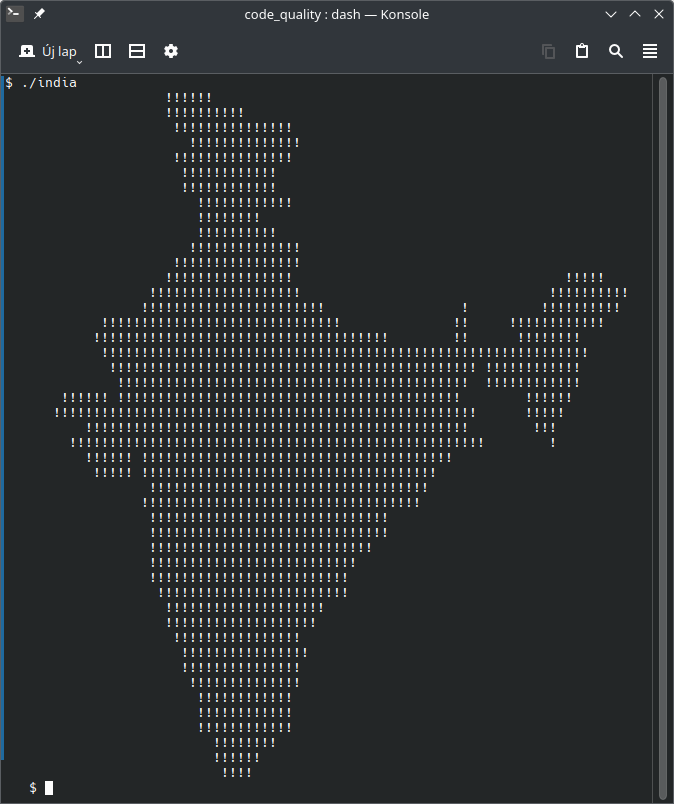

V model (Forsberg & Mooz, 1991)
- each phase has output and a review process
- errors are found at early stage
- decreases the risk of failure
- testing is done in a hierarchical perspective

{kind=link}
requirement analysis review

- can be discussed / reviewed
- even with a customer representative

architecture review


code review
def query_progress(user_id:int) -> float:
# establish connection
con= sqlite3.connect("data.db")
# build query
progress_query = f"""
SELECT
lesson / 50.0 AS progress
FROM activity
WHERE
user_id = {user_id} AND
result = 'success'
ORDER BY
lesson DESC
LIMIT 1
;
"""
# execute query
res =con.execute(progress_query)
progress=res.fetchone()[0]
return progress
- does not respect style guide
- does 3 things
- establish DB connection
- build query
- execute query
- contains separation comments
- hard coded divisor
- magic number
every work product can and should be reviewed
review types by formality
- informal
- walkthrough
- technical
- inspection

informal
- asking a colleague to have a look at the code
- they express their opinion and that’s all
- no documentation
- no process
- pair programming is also a kind of constant informal review
walkthrough
- not a formal process / review
- led by the author(s)
- the author(s) guide the participants through the work product to achieve a common understanding and to gather feedback
- useful for higher level documents like requirement specification
- e.g., risk storming, sprint review
source: What is Walkthrough in software testing? (Try QA, n.d.-b)
technical
- less formal review
- led by the trained moderator or a technical expert
- often performed as a peer review without management participation
- issues are found by experts (e.g., architects, designers)
- technical reviews can vary from quite informal to very formal
source: What is Technical review in software testing? (Try QA, n.d.-a)
(Fagan) inspection (Wikipedia contributors, 2021)
process phases
-
planning: the inspection is planned by the moderator
-
overview meeting: the author describes the background of the WP
-
preparation: each inspector examines the work product to identify possible defects
-
inspection meeting: reader reads through the work product, part by part and the inspectors point out the defects
-
rework: the author makes changes to the work product according to the action plans from the inspection meeting
-
follow-up: the changes are checked to make sure everything is correct
roles
-
author: created the work product being inspected
-
moderator: the leader of the inspection, who plans and coordinates it
-
reader: reads through the documents, while the other inspectors then point out defects
-
recorder: documents the defects that are found during the inspection
-
inspector: examines the work product to identify possible defects

review types by formality – summary
| type | formality | led by | effort | documentation |
|---|---|---|---|---|
| informal | not formal | noone | minimal | undocumented |
| walkthrough | not formal1 | authors | very low | normal, fault-finding |
| technical | less formal | trained moderator, not the author | moderate | more detailed |
| inspection | most formal | trained moderator | high | thorough; based on standards, checklists |
code review – author’s perspective
- be humble
- open to feedback
- the goal is to deliver higher quality code, not about arguing who was
right
- you and the reviewer are in the same side
- you and the reviewer are not only talking about the code,
- you are exchanging best practices and experiences
- you can learn from the review
based on: Code Review Guidelines for Humans (Hauer, 2018)
you are not your code

the subject of the code review is not you, but your code
based on: Code Review Guidelines for Humans (Hauer, 2018)
code review – reviewer’s perspective
- pay attention to the way you are formulating your feedback
- phrasing is crucial for your feedback to be accepted
- you and the author are in the same side
- the goal is to deliver higher quality code, not about arguing who was right
source: Code Review Guidelines for Humans (Hauer, 2018)
use I-messages
formulate your feedback as expressing your personal thoughts
- I suggest
- I think
- I would
- I believe
- it’s hard for me to
- for me, it seems like
it’s hard to argue against personal feelings since they are subjective
- You-messages sound like an absolute statement
- which will lead to a defensive stance
- the author would argue with the reviewer instead of thinking about a change
- so the author will be less open for the feedback
source: Code Review Guidelines for Humans (Hauer, 2018)
talk about the code, not the coder

wrong
you hard-coded the total number of lessons into the query, which is
wrong
right
the total number of lessons is hard-coded into the query, which may
raise issues later
based on: Code Review Guidelines for Humans (Hauer, 2018)
ask questions
- asking questions feels less like a criticism as the author can answer
the question
- it can trigger a thought process which can lead to accepting the feedback
- or the author can come up with a better solution
- by asking questions you can reveal the intention behind a certain
design decision
- there may be a good reason for it

source: Code Review Guidelines for Humans (Hauer, 2018)
refer to the author’s behavior, not their traits
wrong
You are sloppy when it comes to following the style guide.
Can’t you just configure your IDE properly?
right
I believe that you should pay more attention to the style guide.
Try to enable the auto-formatting in your IDE.
- usually it’s not required to talk about the author at all in a code review
- use I-messages, talk about the code or ask questions
based on: Code Review Guidelines for Humans (Hauer, 2018)
OIR-rule of giving feedback
Observation
Describe your observations in an objective and neutral way. Refer to the
behavior if you have to talk about the author. Using an I-message is
often useful here.
e.g., “This method has 100 lines.”
Impact
Explain the impact that the observation has on you. Use I-messages.
e.g., “This makes it hard for me to grasp the essential logic of this method.”
Request
Use an I-message to express your wish or proposal.
e.g., “I suggest extracting the low-level-details into subroutines and give them expressive names.”
source: Code Review Guidelines for Humans (Hauer, 2018)
three filters for feedback
always ask yourself, if your feedback is true, necessary and kind
(from April Wensel (Wensel, 2018) via (Hauer, 2018))
- is it true?
- avoid statements assuming an absolute truth
- avoid the words “right”, “wrong”, “never”, “always” and “should”
- refer to your opinion instead
- is it necessary?
- does the
demandedrequested change make the reviewed code better
- does the
- it it kind?
source: Code Review Guidelines for Humans (Hauer, 2018)
praise
- don’t forget to express your appreciation if you have reviewed good code
- praising doesn’t hurt you but will motivate the author
- however, be specific and separate the prasie from the criticism
based on: Code Review Guidelines for Humans (Hauer, 2018)
looks good to me
- it’s okay to say: “Everything is good!”
- no code change request is a valid outcome of a code review
- you don’t have to find something in the code
- a code can be not just okay, but worth to learn from it
- however, when a reviewer too often says LGTM, it becomes fishy
- especially if the review code turns out to be problematic later regardless the positive feedback
a review process

- is it understandable (clear)
- is it clean (no code smells)
- does it match the task?
- does it fulfill the task?
- every DoD point covered?
- is it possible to improve?
how can you tell if the code matches the task?


how to write the commit message?
- Separate subject from body with a blank line
- Limit the subject line to 50 characters
- Capitalize the subject line
- Do not end the subject line with a period
- Use the imperative mood in the subject line
- Wrap the body at 72 characters
- least important
- Explain what and why not how
- Reference the issue!
- my addition for traceability 
GH-33(GitHub),GL-33(GitLab),- or custom identifier for a project (Jira, JetBrains)

source: How to Write a Git Commit Message (Beams, 2014)
keeping clean history

- features are often developed on separate feature branches
- after a feature is completed, the branch is merged
- as a feature branch may contain too much commits (detail)
- commits on a feature branch often squashed into one commit
review in numbers
- don’t review more than 200 to 400 lines of code at a time
- don’t review for more than 60 minutes at a time
- during an inspection session, the rate should be under 500 LOC per hour
- use informal reviews
- less effort, although very effective

source: (Smartbear, n.d.)
#include <stdio.h>
main()
{
int a,b,c;
int count = 1;
for (b=c=10;a="- FIGURE?, UMKC,XYZHello Folks,\
TFy!QJu ROo TNn(ROo)SLq SLq ULo+\
UHs UJq TNn*RPn/QPbEWS_JSWQAIJO^\
NBELPeHBFHT}TnALVlBLOFAkHFOuFETp\
HCStHAUFAgcEAelclcn^r^r\\tZvYxXy\
T|S~Pn SPm SOn TNn ULo0ULo#ULo-W\
Hq!WFs XDt!" [b+++21]; )
for(; a-- > 64 ; )
putchar ( ++c=='Z' ? c = c/ 9:33^b&1);
return 0;
}

#include "stdio.h"
int main (void) {
int a=10, b=0, c=10;
char* bits ="TFy!QJu ROo TNn(ROo)SLq SLq ULo+UHs UJq TNn*R\
Pn/QPbEWS_JSWQAIJO^NBELPeHBFHT}TnALVlBLOFAkHFOuFETpHCStHAU\
FAgcEAelclcn^r^r\\tZvYxXyT|S~Pn SPm SOn TNn ULo0ULo#ULo-WH\
q!WFs XDt!";
a = bits[b];
while (a != 0) {
a = bits[b];
b++;
while (a > 64) {
a--;
if (++c == 'Z') {
c /= 9;
putchar(c);
} else {
putchar(33 ^ (b & 0x01));
}
}
}
return 0;
}
a less obfuscated version
(with explanation)
by
bta CC BY-SA 2.5

summary
- (code) review is for improving (code) quality
- finding issues as early as possible
- applies to every output element of the development process
- V-model
- requirement analysis can be reviewed
- for design: risk storming
- for code review, four formality level
- informal, walkthrough, technical, inspection
- be open to feedback, try to learn from the review
- the subject of the code review is not you, but your code
- use I-messages
- talk about the code, not the coder
- ask questions
- don’t forget to praise
references
Beams, C. (2014). How to write a git commit message. https://cbea.ms/git-commit/ .
Forsberg, K., & Mooz, H. (1991). The relationship of system engineering to the project cycle. Center for Systems Management, 5333.
Hauer, P. (2018). Code review guidelines for humans. https://phauer.com/2018/code-review-guidelines/ .
Smartbear. (n.d.). Best practices for code review. https://smartbear.com/learn/code-review/best-practices-for-peer-code-review .
Try QA. (n.d.-a). What is technical review in software testing? http://tryqa.com/what-is-technical-review-in-software-testing .
Try QA. (n.d.-b). What is walkthrough in software testing? http://tryqa.com/what-is-walkthrough-in-software-testing .
Wensel, A. (2018). Compassionate (yet candid) code reviews. https://www.slideshare.net/slideshow/compassionate-yet-candid-code-reviews/113119451 .
Wikipedia contributors. (2021). Software inspection — Wikipedia, the free encyclopedia. https://en.wikipedia.org/w/index.php?title=Software_inspection&oldid=1060854286.